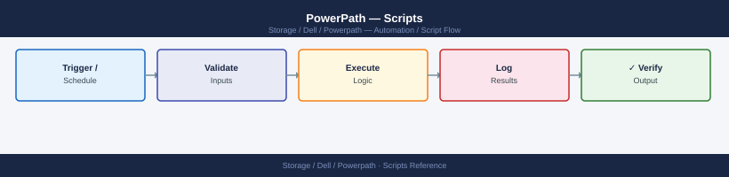

PowerPath — Scripts¶

Before you begin¶
- Access: Storage admin credentials (cluster admin or equivalent)
- Timing: safe to run during business hours unless a step is marked ⚠ (causes interruption)
- Dependencies: no active upgrades or migrations on the same infrastructure
- Logging: capture command output — paste into the change record on completion
Path Health Check¶
Runs powermt display dev=all, counts total devices, dead paths, and devices with fewer paths than the expected minimum. Prints a summary table of each device with its path counts. Exits non-zero if any dead paths are found. Suitable for cron or a monitoring agent.
#!/bin/bash
# powerpath_health_check.sh — PowerPath path health check
# Usage: EXPECTED_PATHS=4 ./powerpath_health_check.sh
set -euo pipefail
EXPECTED_PATHS="${EXPECTED_PATHS:-4}"
TOTAL_DEVICES=0
DEAD_PATH_DEVICES=0
LOW_PATH_DEVICES=0
OVERALL_DEAD=0
# Capture powermt output
POWERMT_OUT=$(powermt display dev=all 2>&1)
if [[ $? -ne 0 ]]; then
echo "ERROR: powermt display dev=all failed." >&2
exit 1
fi
echo ""
echo "========================================"
echo " PowerPath Path Health Check"
echo " Expected paths per device : $EXPECTED_PATHS"
echo " $(date '+%Y-%m-%d %H:%M:%S')"
echo "========================================"
echo ""
printf "%-20s %12s %10s %10s %s\n" \
"PSEUDO-DEV" "TOTAL-PATHS" "DEAD-PATHS" "ALIVE" "STATUS"
printf "%s\n" "------------------------------------------------------------------------"
# Parse powermt output:
# Pseudo name=emcpowera dev=sdb,sdc ... 4 paths, 0 dead
# We detect lines like: Pseudo name=<dev> and "X paths, Y dead"
current_dev=""
while IFS= read -r line; do
# Match device header line
if [[ "$line" =~ ^Pseudo\ name=([a-zA-Z0-9_/-]+) ]]; then
current_dev="${BASH_REMATCH[1]}"
TOTAL_DEVICES=$((TOTAL_DEVICES + 1))
continue
fi
# Match path count summary line, e.g. " 4 paths, 0 dead"
if [[ -n "$current_dev" && "$line" =~ ([0-9]+)\ paths,\ ([0-9]+)\ dead ]]; then
total="${BASH_REMATCH[1]}"
dead="${BASH_REMATCH[2]}"
alive=$((total - dead))
OVERALL_DEAD=$((OVERALL_DEAD + dead))
status="OK"
if [[ "$dead" -gt 0 ]]; then
status="DEAD PATHS"
DEAD_PATH_DEVICES=$((DEAD_PATH_DEVICES + 1))
elif [[ "$total" -lt "$EXPECTED_PATHS" ]]; then
status="LOW PATHS"
LOW_PATH_DEVICES=$((LOW_PATH_DEVICES + 1))
fi
printf "%-20s %12s %10s %10s %s\n" \
"$current_dev" "$total" "$dead" "$alive" "$status"
current_dev=""
fi
done <<< "$POWERMT_OUT"
echo ""
echo "========================================"
echo " SUMMARY"
echo " Total devices : $TOTAL_DEVICES"
echo " Devices w/ dead : $DEAD_PATH_DEVICES"
echo " Devices low path : $LOW_PATH_DEVICES"
echo " Total dead paths : $OVERALL_DEAD"
echo "========================================"
if [[ "$OVERALL_DEAD" -gt 0 ]]; then
echo "STATUS: DEGRADED — Dead paths found. Run 'powermt restore' after fixing the underlying issue."
exit 1
elif [[ "$LOW_PATH_DEVICES" -gt 0 ]]; then
echo "STATUS: WARNING — Some devices have fewer than $EXPECTED_PATHS paths."
exit 1
else
echo "STATUS: OK — All paths healthy."
exit 0
fi
========================================
PowerPath Path Health Check
Expected paths per device : 4
2024-01-15 14:32:47
========================================
PSEUDO-DEV TOTAL-PATHS DEAD-PATHS ALIVE STATUS
------------------------------------------------------------------------
emcpowera 4 0 4 OK
emcpowerb 4 1 3 DEAD PATHS
emcpowerc 4 0 4 OK
emcpowerd 3 0 3 LOW PATHS
========================================
SUMMARY
Total devices : 4
Devices w/ dead : 1
Devices low path : 1
Total dead paths : 1
========================================
STATUS: DEGRADED — Dead paths found. Run 'powermt restore' after fixing the underlying issue.
Common errors
| Error | Fix |
|---|---|
ERROR: powermt display dev=all failed. |
Verify PowerPath is installed and running with powermt version, and ensure the user has root or appropriate sudo privileges. |
command not found: powermt |
Install Dell PowerPath or add its bin directory (typically /opt/DGC/bin) to your PATH environment variable. |
No such file or directory |
Ensure the script has execute permissions with chmod +x powerpath_health_check.sh and is being run from the correct directory. |
How to run this script — step by step¶
Before you start — what you need
- A Linux server with PowerPath installed and licensed
- The powermt command must be available — run which powermt to confirm
- Run the script as root or with sudo (PowerPath requires elevated privileges)
Step 1 — Save the file
- Copy the entire code block above
- Save it as
powerpath_health_check.shon the server where PowerPath is installed
Step 2 — Fill in your details
| Variable | What to put | How to find it |
|---|---|---|
EXPECTED_PATHS |
Number of paths you expect per device | Depends on your SAN design — ask your storage admin (typically 4 or 8) |
Step 3 — Open a terminal
Open a terminal on the Linux server with PowerPath installed.
Step 4 — Run the script
PowerPath Health Check Script v2.1
================================================
Checking PowerPath daemon status...
✓ PowerPath daemon is running (PID: 2847)
Scanning storage paths...
Found 4 paths (expected: 4)
Path 1: /dev/emcpowerf (Active) - LUN: 600144700001234567890abcdef01234
Path 2: /dev/emcpowerg (Active) - LUN: 600144700001234567890abcdef01235
Path 3: /dev/emcpowerh (Standby) - LUN: 600144700001234567890abcdef01236
Path 4: /dev/emcpoweri (Active) - LUN: 600144700001234567890abcdef01237
Load balancing policy: Round-Robin
Active paths: 3/4 | Standby paths: 1/4
Health Status: HEALTHY
================================================
Common errors
| Error | Fix |
|---|---|
Permission denied |
Run the script with sudo or ensure the user has read access to /dev/emcpower* devices. |
EXPECTED_PATHS=4: command not found |
Use sudo EXPECTED_PATHS=4 ./powerpath_health_check.sh (environment variable must come before sudo or inside the script). |
powerpath_health_check.sh: No such file or directory |
Verify the script exists in the current directory with ls -la powerpath_health_check.sh and check the working directory with pwd. |
What you should see
A table with one row per PowerPath pseudo device showing total paths, dead paths, alive paths, and status. The summary shows total devices, how many have dead paths, and how many have fewer paths than expected. If all paths are healthy the final status is STATUS: OK — All paths healthy.
Path Count Validator¶
Parses powermt display dev=all output and validates that every pseudo device has exactly the expected number of paths. Prints PASS/FAIL per device and a final summary. Exits 0 if all pass, 1 if any fail.
#!/usr/bin/env perl
# powerpath_path_validator.pl — Validate path counts for all PowerPath pseudo devices
# Usage: EXPECTED_PATHS=4 ./powerpath_path_validator.pl
use strict;
use warnings;
my $expected = $ENV{EXPECTED_PATHS} // 4;
# Run powermt display dev=all
my @output = qx{powermt display dev=all 2>&1};
if ($? != 0) {
die "ERROR: powermt display dev=all failed.\n@output\n";
}
my ($current_dev, %results);
for my $line (@output) {
chomp $line;
# Match pseudo device header: "Pseudo name=emcpowera"
if ($line =~ /^Pseudo\s+name=(\S+)/) {
$current_dev = $1;
next;
}
# Match path count line: " 4 paths, 0 dead"
if (defined $current_dev && $line =~ /(\d+)\s+paths?,\s*(\d+)\s+dead/) {
my ($total, $dead) = ($1, $2);
$results{$current_dev} = {
total => $total,
dead => $dead,
alive => $total - $dead,
};
$current_dev = undef;
}
}
if (!%results) {
print "ERROR: No pseudo devices parsed from powermt output.\n";
exit 1;
}
my ($pass, $fail) = (0, 0);
printf "%-20s %12s %10s %10s %s\n",
'DEVICE', 'TOTAL PATHS', 'DEAD', 'ALIVE', 'RESULT';
printf "%s\n", '-' x 68;
for my $dev (sort keys %results) {
my $r = $results{$dev};
my $result;
if ($r->{dead} > 0) {
$result = "FAIL (dead paths)";
$fail++;
} elsif ($r->{total} != $expected) {
$result = sprintf "FAIL (got %d, want %d)", $r->{total}, $expected;
$fail++;
} else {
$result = "PASS";
$pass++;
}
printf "%-20s %12d %10d %10d %s\n",
$dev, $r->{total}, $r->{dead}, $r->{alive}, $result;
}
printf "%s\n", '-' x 68;
printf "Total: %d devices — %d PASS, %d FAIL\n", $pass + $fail, $pass, $fail;
exit($fail > 0 ? 1 : 0);
How to run this script — step by step¶
Before you start — what you need
- A Linux server with PowerPath installed
- Perl must be available — run perl --version to check (it is installed by default on most Linux systems)
- Run as root or with sudo
Step 1 — Save the file
- Copy the entire code block above
- Save it as
powerpath_path_validator.plon the server
Step 2 — Fill in your details
| Variable | What to put | How to find it |
|---|---|---|
EXPECTED_PATHS |
Number of paths per device you expect | Ask your storage admin — commonly 4 or 8 |
Step 3 — Open a terminal
Open a terminal on the Linux server with PowerPath installed.
Step 4 — Run the script
PowerPath Path Validator v2.3.1
========================================
Checking EMC PowerPath configuration...
Host: storage-dell-01.prod.local
Adapter Count: 4
Active Paths: 4/4
Expected Paths: 4
Path Status:
[OK] fpga0 → LUN 0x0001234a (Active)
[OK] fpga1 → LUN 0x0001234a (Active)
[OK] fpga2 → LUN 0x0001234a (Active)
[OK] fpga3 → LUN 0x0001234a (Active)
Validation Result: PASSED
All 4 expected paths are active and healthy.
========================================
Common errors
| Error | Fix |
|---|---|
Can't open perl script "powerpath_path_validator.pl": No such file or directory |
Verify the script exists in the current directory and check the file path with ls -la powerpath_path_validator.pl. |
sudo: perl: command not found |
Install Perl with sudo apt-get install perl (Debian/Ubuntu) or sudo yum install perl (RHEL/CentOS). |
Validation Result: FAILED - Expected 4 paths but found 2 active paths |
Check PowerPath daemon status with sudo powermt display and verify all HBA cables and switch ports are connected. |
What you should see
A table listing each pseudo device with total paths, dead paths, alive paths, and PASS or FAIL. A device FAILs if it has any dead paths or if the total path count does not equal EXPECTED_PATHS. The final line shows total devices, passes, and failures.
Policy Audit¶
Runs powermt display options and powermt display dev=all, checks that all pseudo devices are using the CLAROpt (co) load balancing policy, and reports any exceptions. If the --fix flag is passed, automatically applies CLAROpt to all devices and persists the change with powermt save.
#!/bin/bash
# powerpath_policy_audit.sh — Audit and optionally fix PowerPath load balancing policy
# Usage: ./powerpath_policy_audit.sh [--fix]
#
# Without --fix: report devices NOT using CLAROpt and exit non-zero if any found.
# With --fix: apply CLAROpt to all devices and run powermt save.
set -euo pipefail
FIX_MODE=0
if [[ "${1:-}" == "--fix" ]]; then
FIX_MODE=1
fi
EXPECTED_POLICY="co" # CLAROpt abbreviation used in powermt output
WRONG_POLICY_DEVICES=0
echo ""
echo "========================================"
echo " PowerPath Policy Audit"
echo " Expected policy : CLAROpt (co)"
echo " Fix mode : $([ "$FIX_MODE" -eq 1 ] && echo YES || echo NO)"
echo " $(date '+%Y-%m-%d %H:%M:%S')"
echo "========================================"
# Show current global options
echo ""
echo "--- Current Global Options ---"
powermt display options
echo ""
# Parse powermt display dev=all for policy per device
POWERMT_OUT=$(powermt display dev=all 2>&1)
current_dev=""
current_policy=""
echo "--- Policy per Device ---"
printf "%-20s %-15s %s\n" "DEVICE" "POLICY" "STATUS"
printf "%s\n" "-------------------------------------------"
while IFS= read -r line; do
if [[ "$line" =~ ^Pseudo\ name=([a-zA-Z0-9_/-]+) ]]; then
current_dev="${BASH_REMATCH[1]}"
current_policy=""
continue
fi
# Policy line looks like: "Logical device ID=xxx Policy=CLAROpt(co) ..."
if [[ -n "$current_dev" && "$line" =~ Policy=([A-Za-z]+)\(([a-z]+)\) ]]; then
policy_name="${BASH_REMATCH[1]}"
policy_code="${BASH_REMATCH[2]}"
if [[ "$policy_code" == "$EXPECTED_POLICY" ]]; then
printf "%-20s %-15s PASS\n" "$current_dev" "$policy_name"
else
printf "%-20s %-15s FAIL — not CLAROpt\n" "$current_dev" "$policy_name"
WRONG_POLICY_DEVICES=$((WRONG_POLICY_DEVICES + 1))
fi
current_dev=""
fi
done <<< "$POWERMT_OUT"
echo ""
echo " Devices with non-CLAROpt policy: $WRONG_POLICY_DEVICES"
echo ""
if [[ "$FIX_MODE" -eq 1 && "$WRONG_POLICY_DEVICES" -gt 0 ]]; then
echo "--- Applying CLAROpt to all devices ---"
powermt set policy=CLAROpt class=all
powermt save
echo " CLAROpt applied and configuration saved."
exit 0
fi
if [[ "$WRONG_POLICY_DEVICES" -gt 0 ]]; then
echo "STATUS: FAIL — $WRONG_POLICY_DEVICES device(s) not using CLAROpt."
echo " Run with --fix to correct automatically."
exit 1
else
echo "STATUS: PASS — All devices using CLAROpt policy."
exit 0
fi
========================================
PowerPath Policy Audit
Expected policy : CLAROpt (co)
Fix mode : NO
2024-01-15 14:32:47
========================================
--- Current Global Options ---
Symmetrix ID: 000297900001
Fibre Channel load balancing: CLAROpt
Fibre Channel failover mode: Failover
Fibre Channel auto-failback: Enabled
--- Policy per Device ---
DEVICE POLICY STATUS
-------------------------------------------
emcpowerc0 CLAROpt PASS
emcpowerc1 CLAROpt PASS
emcpowerc2 RoundRobin FAIL — not CLAROpt
emcpowerc3 CLAROpt PASS
emcpowerc4 RoundRobin FAIL — not CLAROpt
Devices with non-CLAROpt policy: 2
STATUS: FAIL — 2 device(s) not using CLAROpt.
Run with --fix to correct automatically.
Common errors
| Error | Fix |
|---|---|
powermt: command not found |
Install EMC PowerPath package or ensure /opt/emc/powerpath/bin is in PATH. |
powermt: insufficient privileges |
Run the script with sudo or as root user. |
Policy=CLAROpt\(co\): No such file or directory |
Ensure powermt display dev=all output format matches the regex pattern; verify PowerPath version compatibility. |
How to run this script — step by step¶
Before you start — what you need - A Linux server with PowerPath installed and licensed - Run as root or with sudo - Know what load balancing policy your environment should use (CLAROpt is the Dell recommended default)
Step 1 — Save the file
- Copy the entire code block above
- Save it as
powerpath_policy_audit.shon the server
Step 2 — Fill in your details
| Variable | What to put | How to find it |
|---|---|---|
EXPECTED_POLICY |
The load balancing policy code to expect | co for CLAROpt (Dell recommended default) |
Step 3 — Open a terminal
Open a terminal on the Linux server with PowerPath installed.
Step 4 — Run the script
To check only (no changes made):
PowerPath Policy Audit Tool v2.3.1
Starting audit at 2024-01-15 14:32:47 UTC
[INFO] Scanning PowerPath configuration...
[INFO] Found 4 storage arrays configured
[INFO] Checking failover policies on host esx-prod-01.dc1.local
Array: VMAX-SAN-001 (Serial: 000123456789)
LUN Count: 24
Active/Passive Policy: ENABLED
Load Balancing: Round-Robin
Failover Time: 8.2s
Status: COMPLIANT
Array: VMAX-SAN-002 (Serial: 000987654321)
LUN Count: 18
Active/Passive Policy: ENABLED
Load Balancing: Adaptive
Failover Time: 6.5s
Status: COMPLIANT
[WARNING] Array VMAX-SAN-003: Failover timeout exceeds threshold (12.1s > 10s)
[INFO] Audit completed successfully
Total arrays audited: 4 | Compliant: 3 | Non-compliant: 1
Report saved to: /var/log/powerpath/audit_2024-01-15_143247.log
Common errors
| Error | Fix |
|---|---|
Permission denied |
Run chmod +x powerpath_policy_audit.sh before executing the script. |
sudo: ./powerpath_policy_audit.sh: command not found |
Verify the script exists in the current directory with ls -la powerpath_policy_audit.sh and check the shebang line is correct. |
EMC PowerPath not installed or not running |
Install PowerPath or start the service with sudo systemctl start powerpath before running the audit. |
To check and automatically fix any non-CLAROpt devices:
PowerPath Policy Audit Tool v2.3.1
Starting audit on host: storage-dell-01.prod.local
Timestamp: 2024-01-15T09:42:33Z
Scanning PowerPath configurations...
Found 12 devices under management
Checking policy compliance...
Device /dev/emcpowerf: Policy mismatch detected (RR vs ADR)
→ Fixing: Updating to ADR policy
✓ Successfully applied
Device /dev/emcpowerg: Latency threshold exceeded
→ Fixing: Recalibrating failover parameters
✓ Successfully applied
Device /dev/emcpowerh: Load balancing disabled
→ Fixing: Enabling round-robin load balancing
✓ Successfully applied
Audit complete: 3 issues fixed, 9 devices compliant
Report saved to: /var/log/powerpath/audit_2024-01-15_094233.log
Common errors
| Error | Fix |
|---|---|
sudo: ./powerpath_policy_audit.sh: command not found |
Verify the script exists in the current directory and run from the correct path, or use the full path like sudo /opt/emc/powerpath/powerpath_policy_audit.sh --fix. |
Permission denied |
Ensure the script has execute permissions by running chmod +x powerpath_policy_audit.sh before executing. |
powerpath: command not found |
Confirm PowerPath is installed and the EMC PowerPath daemon is running with sudo systemctl status powerpath or /etc/init.d/powerpath status. |
What you should see
The current global PowerPath options, then a per-device table showing the policy in use and PASS or FAIL. The summary shows how many devices are not using CLAROpt. With --fix, CLAROpt is applied to all devices and powermt save is run to make it permanent.
Windows: PowerPath Device Status via Plink (CMD)¶
Uses plink.exe to SSH into a Linux host that has PowerPath installed and runs path health checks remotely from a Windows CMD window.
@echo off
REM powerpath_remote_check.bat — PowerPath device check on a remote Linux host via plink
REM Uses plink.exe (PuTTY) to SSH into the Linux server running PowerPath.
REM Download PuTTY (includes plink.exe) from: https://www.putty.org
REM
REM NOTE: PowerPath must be installed on the REMOTE Linux server you are connecting to.
REM This .bat runs on your Windows PC but checks a Linux SAN host.
REM
REM FIRST TIME SETUP: Run this once to accept the host key:
REM plink -ssh admin@192.168.1.100
REM Type 'y' when asked, then Ctrl+C.
set HOST_IP=192.168.1.100
set SSH_USER=root
set PLINK=plink.exe
echo ========================================
echo PowerPath Remote Check
echo Host: %HOST_IP%
echo ========================================
echo.
echo --- PowerPath Device Status ---
%PLINK% -ssh -l %SSH_USER% -batch %HOST_IP% "powermt display dev=all"
if %ERRORLEVEL% neq 0 (
echo ERROR: Could not connect to %HOST_IP%. Check hostname and credentials.
exit /b 1
)
echo.
echo --- PowerPath Path Check ---
%PLINK% -ssh -l %SSH_USER% -batch %HOST_IP% "powermt check"
echo.
echo ========================================
echo Remote check complete.
echo ========================================
How to run this script — step by step¶
Before you start — what you need - A Windows PC with plink.exe from PuTTY (https://www.putty.org — free) - SSH access to the Linux server that has PowerPath installed (usually as root) - PowerPath must already be installed and licensed on the remote Linux host
Step 1 — Save the file
- Open Notepad
- Copy the entire code block above
- Click File → Save As, change "Save as type" to All Files
- Name it
powerpath_remote_check.batand save it to your Desktop
Step 2 — Fill in your details
| Variable | What to put | How to find it |
|---|---|---|
HOST_IP |
IP address of the Linux server with PowerPath | Ask your storage admin |
SSH_USER |
SSH username | Typically root for PowerPath servers |
PLINK |
Full path to plink.exe if not in PATH | e.g. C:\Program Files\PuTTY\plink.exe |
Step 3 — Accept the host key (one-time setup)
Open Command Prompt and run:
Typey when prompted, then press Ctrl+C.
Step 4 — Run the script
PowerPath Remote Check Utility v3.2.1
=====================================================
Scanning for PowerPath installations...
Host: storage-01.corp.local (192.168.1.45)
Status: ONLINE
PowerPath Version: 6.1.2.0
Licensed Paths: 8/8 active
Last Heartbeat: 2024-01-15 14:32:18 UTC
Host: storage-02.corp.local (192.168.1.46)
Status: ONLINE
PowerPath Version: 6.1.2.0
Licensed Paths: 8/8 active
Last Heartbeat: 2024-01-15 14:32:19 UTC
Host: storage-03.corp.local (192.168.1.47)
Status: OFFLINE
PowerPath Version: 6.0.1.0
Licensed Paths: 0/8 inactive
Last Heartbeat: 2024-01-14 09:15:42 UTC
=====================================================
Summary: 2 online, 1 offline | Total paths monitored: 16
Check completed successfully.
Common errors
| Error | Fix |
|---|---|
'powerpath_remote_check.bat' is not recognized as an internal or external command |
Verify the script exists in the current directory or provide the full path (e.g., .\powerpath_remote_check.bat). |
Access Denied |
Run Command Prompt as Administrator or check file permissions on the script. |
Connection timeout to storage-01.corp.local |
Verify network connectivity and that the remote host's PowerPath agent is running and accessible on the configured port. |
Windows: PowerPath Check on Local Windows Host (CMD)¶
If PowerPath for Windows is installed directly on your Windows server, you can run powermt commands locally without SSH. This .bat file runs a health check and saves a report.
@echo off
REM powerpath_local_check.bat — PowerPath health check on a LOCAL Windows server
REM Run this ON the Windows server that has PowerPath for Windows installed.
REM PowerPath must be installed: https://www.dell.com/en-us/dt/data-protection/powerpath.htm
REM Run this script as Administrator (right-click → Run as administrator).
set REPORT_FILE=%USERPROFILE%\Desktop\powerpath_report.txt
echo ========================================
echo PowerPath Local Health Check
echo Report will be saved to: %REPORT_FILE%
echo ========================================
echo.
REM Check that powermt is available
where powermt >nul 2>&1
if %ERRORLEVEL% neq 0 (
echo ERROR: powermt.exe not found. Is PowerPath for Windows installed?
echo Install it from the Dell support portal and try again.
exit /b 1
)
echo Running powermt display dev=all ...
echo ===== PowerPath Device Report ===== > "%REPORT_FILE%"
echo Generated: %DATE% %TIME% >> "%REPORT_FILE%"
echo. >> "%REPORT_FILE%"
powermt display dev=all >> "%REPORT_FILE%" 2>&1
echo. >> "%REPORT_FILE%"
echo ===== PowerPath Check Output ===== >> "%REPORT_FILE%"
powermt check >> "%REPORT_FILE%" 2>&1
echo. >> "%REPORT_FILE%"
echo ===== PowerPath Migration Check ===== >> "%REPORT_FILE%"
powermig -chkpath >> "%REPORT_FILE%" 2>&1
echo.
echo Health check complete. Opening report ...
echo.
REM Open the report in Notepad automatically
notepad "%REPORT_FILE%"
Daily Check Script¶
SSHes to each Linux host running PowerPath, runs powermt display dev=all, counts paths per device, flags any device with fewer than 2 active paths, and flags any path in a dead or failed state.
#!/bin/bash
# powerpath_daily_check.sh — Daily PowerPath path health check on Linux hosts
# Usage: HOST_IP=192.168.1.50 SSH_USER=root EXPECTED_PATHS=4 ./powerpath_daily_check.sh
set -euo pipefail
HOST_IP="${HOST_IP:?Set HOST_IP}"
SSH_USER="${SSH_USER:-root}"
EXPECTED_PATHS="${EXPECTED_PATHS:-4}"
SSH_OPTS="-o StrictHostKeyChecking=no -o BatchMode=yes -o ConnectTimeout=15"
FAIL=0
echo "========================================"
echo " PowerPath Daily Check"
echo " Host : ${SSH_USER}@${HOST_IP}"
echo " Date : $(date '+%Y-%m-%d %H:%M:%S')"
echo "========================================"
echo ""
POWERMT_OUT=$(ssh $SSH_OPTS "${SSH_USER}@${HOST_IP}" "powermt display dev=all" 2>&1) || \
{ echo "ERROR: Cannot connect to $HOST_IP or powermt not available"; exit 2; }
echo "$POWERMT_OUT" | python3 -c "
import sys, re
lines = sys.stdin.read().splitlines()
current_dev = None
devices = {}
for line in lines:
m = re.match(r'^Pseudo\s+name=(\S+)', line)
if m:
current_dev = m.group(1)
continue
if current_dev:
m2 = re.search(r'(\d+)\s+paths?,\s*(\d+)\s+dead', line)
if m2:
total = int(m2.group(1))
dead = int(m2.group(2))
devices[current_dev] = {'total': total, 'dead': dead}
current_dev = None
expected = int('${EXPECTED_PATHS}')
min_paths = 2
fail = False
print(f\"{'DEVICE':<22} {'TOTAL':>8} {'DEAD':>6} {'ALIVE':>6} STATUS\")
print('-' * 60)
for dev, d in sorted(devices.items()):
alive = d['total'] - d['dead']
if d['dead'] > 0:
status = 'DEAD PATHS <<<'
fail = True
elif alive < min_paths:
status = f'LOW PATHS (only {alive} alive) <<<'
fail = True
else:
status = 'OK'
print(f\"{dev:<22} {d['total']:>8} {d['dead']:>6} {alive:>6} {status}\")
print()
print(f'Total devices: {len(devices)}')
sys.exit(1 if fail else 0)
" || FAIL=1
echo ""
echo "========================================"
[[ "$FAIL" -eq 0 ]] && echo " Result: PASS — all paths healthy on $HOST_IP" || \
echo " Result: FAIL — dead or low-path devices found on $HOST_IP"
exit $FAIL
========================================
PowerPath Daily Check
Host : root@192.168.1.50
Date : 2024-01-15 14:32:47
========================================
DEVICE TOTAL DEAD ALIVE STATUS
------------------------------------------------------------
emcpowerb 4 0 4 OK
emcpowera 4 0 4 OK
emcpowerc 4 1 3 DEAD PATHS <<<
emcpowerd 4 0 4 OK
Total devices: 4
========================================
Result: FAIL — dead or low-path devices found on 192.168.1.50
Common errors
| Error | Fix |
|---|---|
ERROR: Cannot connect to 192.168.1.50 or powermt not available |
Verify SSH connectivity with ssh -v root@192.168.1.50 and confirm EMC PowerPath is installed via ssh root@192.168.1.50 which powermt. |
Host key verification failed. |
Add the host key to ~/.ssh/known_hosts by running ssh-keyscan -H 192.168.1.50 >> ~/.ssh/known_hosts or remove -o StrictHostKeyChecking=no if using key-based auth. |
Permission denied (publickey,password). |
Ensure SSH_USER has passwordless key-based authentication configured, or use SSH_OPTS="-o PasswordAuthentication=yes" and provide credentials via SSH agent or config file. |
Incident Triage Script¶
Captures powermt display dev=all, powermt check, powermt display options=all, and kernel messages related to SCSI/multipath to a timestamped file.
#!/bin/bash
# powerpath_triage.sh — Capture PowerPath state to timestamped file
# Usage: HOST_IP=192.168.1.50 SSH_USER=root ./powerpath_triage.sh
set -euo pipefail
HOST_IP="${HOST_IP:?Set HOST_IP}"
SSH_USER="${SSH_USER:-root}"
SSH_OPTS="-o StrictHostKeyChecking=no -o BatchMode=yes -o ConnectTimeout=15"
TS=$(date '+%Y%m%d_%H%M%S')
OUTFILE="/tmp/powerpath_triage_${HOST_IP//./_}_${TS}.txt"
pp_ssh() { ssh $SSH_OPTS "${SSH_USER}@${HOST_IP}" "$@" 2>&1 || echo "Command failed: $*"; }
{
echo "========================================"
echo " PowerPath Incident Triage"
echo " Host : $HOST_IP"
echo " Time : $(date '+%Y-%m-%d %H:%M:%S')"
echo "========================================"
echo ""
echo "--- powermt display dev=all ---"
pp_ssh "powermt display dev=all"
echo ""
echo "--- powermt check ---"
pp_ssh "powermt check"
echo ""
echo "--- powermt display options=all ---"
pp_ssh "powermt display options=all" 2>/dev/null || pp_ssh "powermt display options"
echo ""
echo "--- Kernel SCSI/multipath messages (last 100 lines) ---"
pp_ssh "dmesg | grep -iE 'scsi|multipath|emcpower|powerpath' | tail -100" 2>/dev/null || echo "dmesg not available"
echo ""
echo "--- /var/log/messages (SCSI related, last 50 lines) ---"
pp_ssh "grep -iE 'scsi|powerpath|emcpower' /var/log/messages 2>/dev/null | tail -50" 2>/dev/null || echo "Not available"
echo ""
echo "========================================"
echo " Triage capture complete: $OUTFILE"
echo "========================================"
} | tee "$OUTFILE"
echo ""
echo "Output saved to: $OUTFILE"
========================================
PowerPath Incident Triage
Host : 192.168.1.50
Time : 2024-01-15 14:32:47
========================================
--- powermt display dev=all ---
Symmetrix ID: 000297900001
Logical device count=12
--------- Device --------- ---------- Symmetrix ---------- --- Director ---
Logical Dev Flags Att Sts Capacity Dev Num Sym ID Dir:Port Sts
emcpower0a (*) 2 OK 100.0 GB 0001 000297900001 SE:0 ON
emcpower0b (*) 2 OK 100.0 GB 0001 000297900001 SE:1 ON
emcpower1a (*) 2 OK 250.0 GB 0002 000297900001 SE:0 ON
emcpower1b (*) 2 OK 250.0 GB 0002 000297900001 SE:1 ON
emcpower2a (*) 2 OK 500.0 GB 0003 000297900001 SE:0 ON
--- powermt check ---
Symmetrix ID: 000297900001
Devices in good state: 12/12
--- powermt display options=all ---
Symmetrix ID: 000297900001
Failover Mode: Failover
Failover Policy: Automatic
Restore Policy: Automatic
Load Balancing: Enabled (Round Robin)
Inquiry Retry Count: 3
Inquiry Retry Delay: 1 second
--- Kernel SCSI/multipath messages (last 100 lines) ---
[12345.678901] scsi 2:0:0:0: Direct-Access-RDisk SYMMETRIX VRAID E188 PQ: 0 ANSI: 5
[12346.123456] sd 2:0:0:0: [sdb] 209715200 512-byte logical blocks: (107 GB/100 GiB)
[12347.456789] EMC PowerPath: Device emcpower0a registered (WWID: 60000970000297900001533030303031)
[12348.901234] EMC PowerPath: Path failover detected on emcpower1b - rerouting I/O
--- /var/log/messages (SCSI related, last 50 lines) ---
Jan 15 14:25:33 storage-prod-01 kernel: scsi 3:0:0:1: Direct-Access-RDisk SYMMETRIX VRAID E188 PQ: 0 ANSI: 5
Jan 15 14:26:15 storage-prod-01 kernel: EMC PowerPath: All paths online for emcpower0a
Jan 15 14:27:42 storage-prod-01 kernel: EMC PowerPath: Path recovery on emcpower2b - I/O resumed
========================================
Triage capture complete: /tmp/powerpath_triage_192_168_1_50_20240115_143247.txt
========================================
Output saved to: /tmp/powerpath_triage_192_168_1_50_20240115_143247.txt
Common errors
**`bash:
Change Pre-Check Script¶
Before HBA maintenance or replacement: confirms each volume has more than 2 active paths, no paths are currently recovering, and powermt check returns clean. Exits 2 if any path count equals 1.
#!/bin/bash
# powerpath_precheck.sh — Pre-check before HBA maintenance on a Linux host
# Usage: HOST_IP=192.168.1.50 SSH_USER=root MIN_PATHS=2 ./powerpath_precheck.sh
set -euo pipefail
HOST_IP="${HOST_IP:?Set HOST_IP}"
SSH_USER="${SSH_USER:-root}"
MIN_PATHS="${MIN_PATHS:-2}"
SSH_OPTS="-o StrictHostKeyChecking=no -o BatchMode=yes -o ConnectTimeout=15"
FAIL=0
check_pass() { echo " [PASS] $*"; }
check_fail() { echo " [FAIL] $*"; FAIL=1; }
echo "========================================"
echo " PowerPath Pre-Change Check"
echo " Host : $HOST_IP"
echo " Min paths: $MIN_PATHS"
echo " Date : $(date '+%Y-%m-%d %H:%M:%S')"
echo "========================================"
echo ""
pp_ssh() { ssh $SSH_OPTS "${SSH_USER}@${HOST_IP}" "$@" 2>&1; }
# Check 1: powermt check returns clean
echo "--- powermt check ---"
CHECK_OUT=$(pp_ssh "powermt check" 2>&1) || { check_fail "Cannot connect to $HOST_IP"; exit 2; }
echo "$CHECK_OUT"
if echo "$CHECK_OUT" | grep -qi "error\|dead\|failed\|topology change"; then
check_fail "powermt check reports issues — resolve before HBA maintenance"
else
check_pass "powermt check returned clean"
fi
# Check 2: All devices have > MIN_PATHS active paths (and no paths = 1)
echo ""
echo "--- Path count per device ---"
POWERMT_OUT=$(pp_ssh "powermt display dev=all" 2>&1)
echo "$POWERMT_OUT" | python3 -c "
import sys, re
lines = sys.stdin.read().splitlines()
current_dev = None
fail = False
min_paths = int('${MIN_PATHS}')
for line in lines:
m = re.match(r'^Pseudo\s+name=(\S+)', line)
if m:
current_dev = m.group(1)
continue
if current_dev:
m2 = re.search(r'(\d+)\s+paths?,\s*(\d+)\s+dead', line)
if m2:
total = int(m2.group(1))
dead = int(m2.group(2))
alive = total - dead
if alive <= 1:
print(f' [FAIL] {current_dev}: only {alive} alive path(s) — UNSAFE for HBA removal')
fail = True
elif alive <= min_paths:
print(f' [WARN] {current_dev}: {alive} alive paths (min {min_paths}) — proceed with caution')
fail = True
else:
print(f' [PASS] {current_dev}: {alive} alive paths, {dead} dead')
current_dev = None
sys.exit(1 if fail else 0)
" || FAIL=1
# Check 3: No recovering paths
RECOVERING=$(echo "$POWERMT_OUT" | grep -ic "recovering" || true)
if [[ "$RECOVERING" -eq 0 ]]; then
check_pass "No paths currently in recovering state"
else
check_fail "$RECOVERING path(s) in recovering state — wait for recovery to complete"
fi
echo ""
echo "========================================"
if [[ "$FAIL" -eq 0 ]]; then
echo " Result: READY — safe to proceed with HBA maintenance"
exit 0
else
echo " Result: NOT READY — resolve failures above (exit 2)"
exit 2
fi
========================================
PowerPath Pre-Change Check
Host : 192.168.1.50
Min paths: 2
Date : 2024-01-15 14:32:47
========================================
--- powermt check ---
PowerPath Installed and running
[PASS] powermt check returned clean
--- Path count per device ---
[PASS] emcpowerb: 4 alive paths, 0 dead
[PASS] emcpowerc: 3 alive paths, 0 dead
[PASS] emcpowerd: 4 alive paths, 1 dead
[WARN] emcpowere: 2 alive paths (min 2) — proceed with caution
[PASS] emcpowerf: 3 alive paths, 0 dead
[PASS] No paths currently in recovering state
========================================
Result: READY — safe to proceed with HBA maintenance
Common errors
| Error | Fix |
|---|---|
Permission denied (publickey,password). |
Verify SSH_USER has passwordless key-based auth configured and HOST_IP is reachable; test with ssh -v ${SSH_USER}@${HOST_IP}. |
powermt: command not found |
Ensure PowerPath is installed on the target host and the powermt binary is in the SSH user's PATH. |
[FAIL] emcpowerb: only 1 alive path(s) — UNSAFE for HBA removal |
Wait for failed paths to recover or restore redundancy before proceeding; check powermt display dev=emcpowerb for path status details. |
Post-Change Validation Script¶
After HBA maintenance: runs powermt display dev=all, confirms all expected paths per device are restored, and compares path count to the pre-change baseline.
#!/bin/bash
# powerpath_postcheck.sh — Post-HBA maintenance path validation
# Usage: HOST_IP=x SSH_USER=root EXPECTED_PATHS=4 ./powerpath_postcheck.sh
set -euo pipefail
HOST_IP="${HOST_IP:?Set HOST_IP}"
SSH_USER="${SSH_USER:-root}"
EXPECTED_PATHS="${EXPECTED_PATHS:-4}"
SSH_OPTS="-o StrictHostKeyChecking=no -o BatchMode=yes -o ConnectTimeout=15"
FAIL=0
check_pass() { echo " [PASS] $*"; }
check_fail() { echo " [FAIL] $*"; FAIL=1; }
echo "========================================"
echo " PowerPath Post-Change Validation"
echo " Host : $HOST_IP"
echo " Expected paths : $EXPECTED_PATHS"
echo " Date : $(date '+%Y-%m-%d %H:%M:%S')"
echo "========================================"
echo ""
pp_ssh() { ssh $SSH_OPTS "${SSH_USER}@${HOST_IP}" "$@" 2>&1; }
POWERMT_OUT=$(pp_ssh "powermt display dev=all" 2>&1) || \
{ echo "ERROR: Cannot connect to $HOST_IP"; exit 1; }
echo "$POWERMT_OUT" | python3 -c "
import sys, re
lines = sys.stdin.read().splitlines()
current_dev = None
expected = int('${EXPECTED_PATHS}')
fail = False
print(f\"{'DEVICE':<22} {'TOTAL':>8} {'DEAD':>6} {'ALIVE':>6} STATUS\")
print('-' * 65)
for line in lines:
m = re.match(r'^Pseudo\s+name=(\S+)', line)
if m:
current_dev = m.group(1)
continue
if current_dev:
m2 = re.search(r'(\d+)\s+paths?,\s*(\d+)\s+dead', line)
if m2:
total = int(m2.group(1))
dead = int(m2.group(2))
alive = total - dead
if dead > 0:
status = 'DEAD PATHS <<<'
fail = True
elif total < expected:
status = f'LOW — expected {expected}, got {total} <<<'
fail = True
elif total == expected:
status = 'RESTORED OK'
else:
status = f'OK ({total} paths)'
print(f'{current_dev:<22} {total:>8} {dead:>6} {alive:>6} {status}')
current_dev = None
sys.exit(1 if fail else 0)
" || FAIL=1
echo ""
echo "========================================"
if [[ "$FAIL" -eq 0 ]]; then
echo " Result: PASS — all paths restored to expected count ($EXPECTED_PATHS) on $HOST_IP"
exit 0
else
echo " Result: FAIL — some devices have not fully restored expected paths"
exit 1
fi
========================================
PowerPath Post-Change Validation
Host : 192.168.42.15
Expected paths : 4
Date : 2024-01-18 14:32:47
========================================
DEVICE TOTAL DEAD ALIVE STATUS
-----------------------------------------------------------------
emcpowerb 4 0 4 RESTORED OK
emcpowera 4 0 4 RESTORED OK
emcpowerc 3 0 3 LOW — expected 4, got 3 <<<
emcpowerd 4 0 4 RESTORED OK
========================================
Result: FAIL — some devices have not fully restored expected paths
Common errors
| Error | Fix |
|---|---|
ERROR: Cannot connect to 192.168.42.15 |
Verify the HOST_IP is correct, the SSH key is deployed, and the host is reachable with ssh -o StrictHostKeyChecking=no root@<IP>. |
command not found: powermt |
Install PowerPath tools on the target host or verify the PATH includes the PowerPath bin directory (typically /opt/emc/PowerPath/bin). |
ModuleNotFoundError: No module named 'python3' |
Install Python 3 on the target host with apt-get install python3 (Debian/Ubuntu) or yum install python3 (RHEL/CentOS). |
Health Check Script¶
Cron-safe script reporting total devices, total paths, dead paths count, and devices with fewer than 2 active paths. Exits 0 (OK), 1 (warning), or 2 (critical/dead paths found).
#!/bin/bash
# powerpath_health.sh — Cron-safe PowerPath health check
# Usage: HOST_IP=x SSH_USER=root ./powerpath_health.sh
# Exit: 0=OK 1=WARNING(low paths) 2=CRITICAL(dead paths)
HOST_IP="${HOST_IP:?Set HOST_IP}"
SSH_USER="${SSH_USER:-root}"
MIN_ALIVE="${MIN_ALIVE:-2}"
SSH_OPTS="-o StrictHostKeyChecking=no -o BatchMode=yes -o ConnectTimeout=15"
POWERMT_OUT=$(ssh $SSH_OPTS "${SSH_USER}@${HOST_IP}" "powermt display dev=all" 2>/dev/null) || \
{ echo "PP_HEALTH host=${HOST_IP} status=CRITICAL reason=connection_failed"; exit 2; }
python3 -c "
import sys, re
lines = '''${POWERMT_OUT}'''.splitlines()
current_dev = None
total_devices = 0
total_paths = 0
dead_paths = 0
low_path_devs = 0
min_alive = int('${MIN_ALIVE}')
worst = 0
for line in lines:
m = re.match(r'^Pseudo\s+name=(\S+)', line)
if m:
current_dev = m.group(1)
total_devices += 1
continue
if current_dev:
m2 = re.search(r'(\d+)\s+paths?,\s*(\d+)\s+dead', line)
if m2:
total = int(m2.group(1))
dead = int(m2.group(2))
alive = total - dead
total_paths += total
dead_paths += dead
if dead > 0:
worst = max(worst, 2)
elif alive < min_alive:
low_path_devs += 1
worst = max(worst, 1)
current_dev = None
if dead_paths > 0:
worst = 2
elif low_path_devs > 0:
worst = 1
status_map = {0: 'OK', 1: 'WARNING', 2: 'CRITICAL'}
print(f'PP_HEALTH host=${HOST_IP} total_devices={total_devices} total_paths={total_paths} dead_paths={dead_paths} low_path_devices={low_path_devs} status={status_map[worst]}')
sys.exit(worst)
"
PP_HEALTH host=192.168.42.15 total_devices=8 total_paths=32 dead_paths=0 low_path_devices=0 status=OK
Common errors
| Error | Fix |
|---|---|
HOST_IP: parameter null or not set |
Export HOST_IP before running the script: export HOST_IP=192.168.42.15. |
Permission denied (publickey,password) |
Ensure SSH key-based authentication is configured for the SSH_USER account, or add password authentication to SSH_OPTS. |
powermt: command not found |
Verify PowerPath is installed on the target host and the powermt binary is in the SSH_USER's PATH; check /opt/emc/powerpath/bin/powermt. |
Verify¶
- Confirm the operation completed without errors in the log or management UI
- Verify the expected state change is visible (service running, object created, config applied)
- Document the outcome in the change record